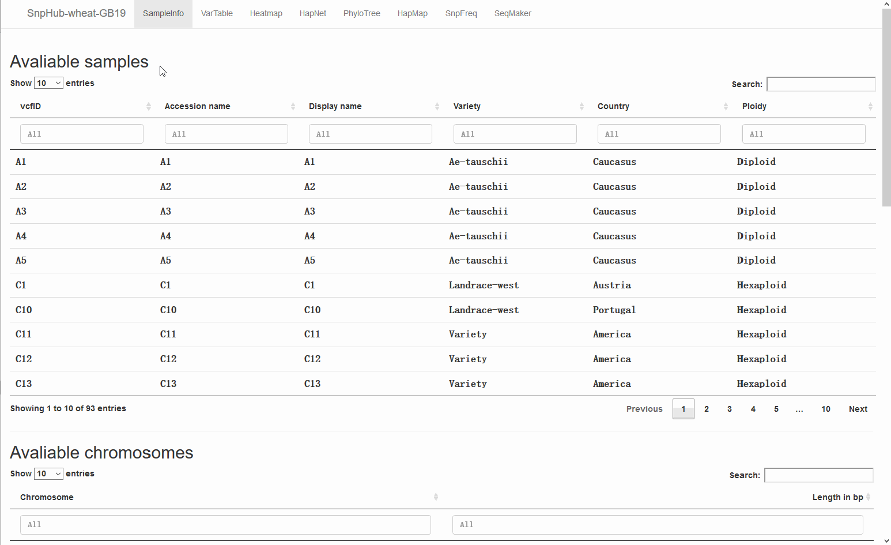

3.1. SampleInfo, a first glance of the dataset
3.1.1. Introduction with pictures and texts
SampleInfo is the functional channel, providing the sample description information for the data set, including ① samples ID tables, ② chromosome information, ③ predefined sample groups, and ④ other system information.

①: The
Available samplestable shows all the samples available in the current instance. Generally, theAccession nameis usually simple and short for user to specify sample lists by filling into the text box, and theDisplay nameis the readable name that will be shown on figures.- To balance the requirements of convenience in management by server managers, and ease of querying and readability of the analysis result, SnpHub utilizes a triple-name/ID for a sample, which includes (a) the vcfID, (b) the Accession name and (c) the Display name.
- (a) The vcfID is a string name that is the same as that provided in the VCF files, avoiding the modification of the original VCF files.
- (b) The Accession name is usually a short name, such as “S01,S02,S03”, so that it can be easily typed in the input box for querying a list of samples.
- (c) The Display name is designed as a readable name to be displayed in the results and figures so that researchers can conveniently interpret the result.
- Arbitrary sample information such as sample passport or sample notes could be provided in additional columns.
- To balance the requirements of convenience in management by server managers, and ease of querying and readability of the analysis result, SnpHub utilizes a triple-name/ID for a sample, which includes (a) the vcfID, (b) the Accession name and (c) the Display name.
②: The
Available chromosomestable shows the IDs of all the available chromosomes or scaffolds, as well as their length, which is the maximum limitation for specifying a valid queried region.

③: The
Pre-defined sample groupstable shows all the available pre-defined groups, which is maintained by the system manager. The pre-defined sample groups are usually widely-used by users, for example, “Experiment”, “Control”, “Cultivar”, “Wild”, “Landrace”, etc. Users can specify the predefined groups by the Group name/GroupID, so as to saving the labor for texting.- For the "
Samples" input box, adding a hashtag (#) before the group name is required, to distinguish it from sample accession names. - For the "
Groups" input box, the group name can be specified directly. - More detailed usage see overview section
- For the "
④: The
Other system informationtable shows more other meta-information for illustrating the dataset, which can be freely defined by the system manager. For example, the meta-information can include reference genome information, annotation information, details of raw data alignment, and data-using policy.

All tables are provided with flexible searching functions, for the conveniences to exploring long tables.
3.1.2. Demonstration
